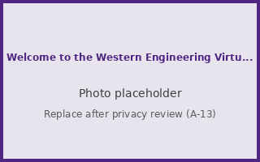

An accessible companion to the WEVE 3D prototype. Every space and point of interest from the 3D tour is described here.
Prototype by SE 3351 Team 50. Draft content, not Western-approved. Photos are placeholders until they pass the privacy review.
Getting started
Welcome to the Western Engineering Virtual Explorer

Explore three Western Engineering buildings from anywhere. Walk with W A S D and look around with the mouse. Right-click a purple info point to learn about a space. Right-click a purple pad behind you to jump to a building, or type /building teb, /building seb or /building aceb. Use the guide item (or type /go) to travel straight to any point of interest or to follow the guided tour. Areas behind grey doors are not part of the tour.
TEB was completed in 2003. It is home to the departments of Electrical and Computer Engineering and of Chemical and Biochemical Engineering. This virtual tour covers the main entrance, the lobby and the ground-floor corridor.
The ground-floor corridor links the lobby with teaching spaces. Rooms behind the grey doors, upper floors, research labs and offices are not part of the virtual tour.
In undergraduate teaching labs like this one, students put lecture theory into practice: they build and test circuits, use measurement equipment and write up what they find. You are viewing the lab from the doorway. The equipment shown is generic.
SEB was built in 1958 and 1959 and inaugurated on October 30, 1959. Designed by Ronald Murphy in the Gothic Collegiate style, it has three storeys and is named after Major General Alexander Charles Spencer. It houses the Dean's office, Mechanical and Materials Engineering, and Civil and Environmental Engineering.
Lecture hall 1200 is a tiered classroom in the SEB lecture-hall extension. Classrooms like this one host lectures and tutorials. First-year students at Western Engineering share a common first year before choosing their discipline.
ACEB opened on October 12, 2018. Its 100,000 square feet hold teaching labs, tiered classrooms, collaborative research space, the Engineering Galleries, flexible meeting spaces and this welcoming atrium, a gathering place for students.
ACEB's 2,500 square foot prototyping space is where undergraduate students combine classroom theory with hands-on learning: designing, building, testing and refining their ideas. Machines shown are generic.
ACEB was designed with sustainability in mind. It features rainwater harvesting, electric-vehicle charging and solar energy, and won a provincial award of excellence for new green buildings in 2018.